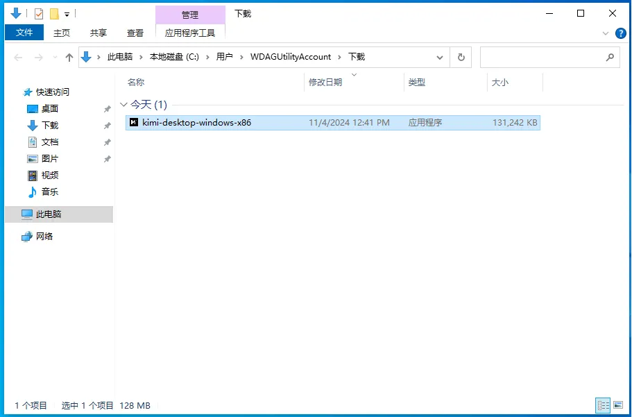
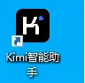
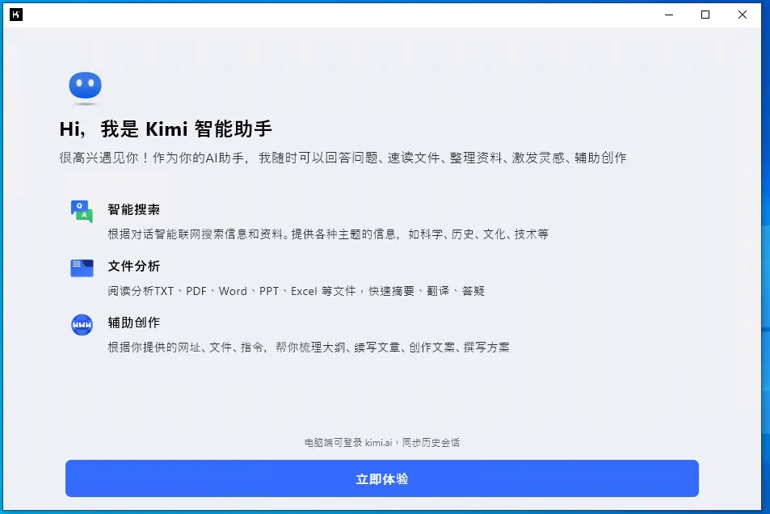

Kimi安装指南（Windows版）
1. 系统要求
- 操作系统：Windows 7/8/10/11（32位或64位）
- 内存：至少2GB RAM
- 硬盘空间：至少500MB可用空间
- 网络连接：需要稳定的网络连接以访问Kimi服务
2. 安装步骤
步骤1：下载Kimi应用程序
-
访问Kimi官方网站：Kimi官方网站。
-
在网站上找到适用于Windows的Kimi应用程序下载链接。
-
点击下载并保存安装文件到您的计算机上。*

步骤2：安装Kimi应用程序
-
双击下载的安装文件以启动安装程序。
-
按照安装向导的指示进行操作。
-
接受许可协议。
- 选择安装路径（默认路径或自定义路径）。
-
点击“安装”按钮开始安装过程。
-
安装完成后，点击“完成”按钮结束安装向导。

步骤3：启动Kimi应用程序
-
点击“开始”菜单，找到Kimi应用程序。
-
点击Kimi图标启动应用程序。
-
如果是第一次运行，可能需要进行一些初始设置，如登录或创建账户。

步骤4：更新Kimi应用程序
-
Kimi应用程序会定期检查更新。
-
如果有可用的更新，应用程序会自动下载并提示您安装。
-
您也可以手动检查更新，方法是点击应用程序内的“帮助”菜单，然后选择“检查更新”。
[更新Kimi应用程序的图片占位符]
3. 使用Kimi
-
启动Kimi后，您将看到一个用户界面，您可以在这里输入问题或请求。
-
Kimi会以对话的形式回应您的问题。
-
您可以通过文本输入与Kimi互动，Kimi会提供信息、解答疑问或执行指定的任务。

4. 故障排除
- 如果安装过程中遇到问题，请确保您的Windows系统更新到最新版本。
- 如果Kimi应用程序无法启动，请检查您的防火墙或杀毒软件设置，确保它们没有阻止Kimi应用程序。
- 如果您遇到任何技术问题，可以访问Kimi的帮助中心或联系客服获取支持。
5. 卸载Kimi
- 您可以通过Windows的“控制面板”中的“程序和功能”来卸载Kimi。
- 选择Kimi应用程序，然后点击“卸载”按钮。
- 按照提示完成卸载过程。